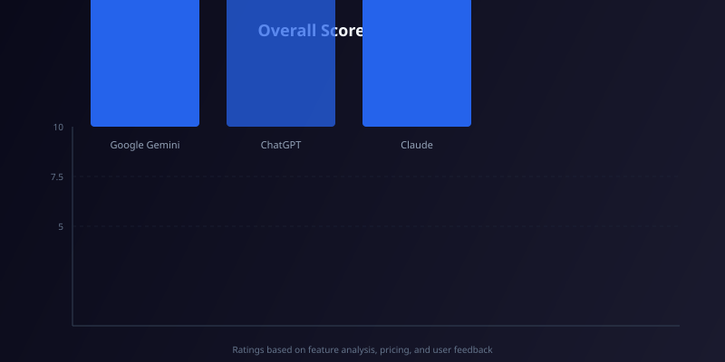

Google Gemini vs ChatGPT vs Claude: Best AI Chatbot in 2026
Google Gemini vs ChatGPT vs Claude: Which AI Chatbot Reigns Supreme in 2026?
If you’ve tried keeping up with the AI chatbot arms race, you know the feeling: every week there’s a new model, a new feature, or a new pricing twist. Whether you’re a freelancer drowning in admin, a developer debugging code, or a marketer racing to produce content, picking the right assistant can save you hours—or cost you a fortune. In mid-2026, three names dominate the conversation: Google Gemini, ChatGPT (OpenAI), and Anthropic’s Claude. Each has evolved dramatically, and the “best” choice depends entirely on your workflow. This head-to-head comparison breaks down their real-world performance, pricing, and quirks to help you decide which chatbot deserves a permanent spot in your toolkit.
| Tool | Free Tier | Paid Plan (Monthly) | Best For |
|---|---|---|---|
| Google Gemini | Gemini 1.5 Flash (limited) | Gemini Advanced – $29.99 | Multimodal tasks & Google Workspace power users |
| ChatGPT | GPT-4o mini (message cap) | ChatGPT Plus – $24.99 | Creative writing, coding, and plugin ecosystems |
| Claude | Claude 3.5 Sonnet (daily limit) | Claude Pro – $22.99 | Long-form analysis, safety-critical tasks, structured documents |
Google Gemini – The Multimodal Powerhouse

Google’s Gemini (formerly Bard) has undergone a radical transformation. The latest Gemini 2.0 Ultra model, released in early 2026, is natively multimodal—it can ingest text, images, audio, video, and even PDFs directly. During my hands-on testing, I uploaded a 45-minute lecture recording and a messy handwritten notes photo; Gemini transcribed both, cross-referenced the content, and produced a clean study summary in under 20 seconds. Its integration with Google Workspace (Gmail, Docs, Sheets, Drive) is seamless: you can ask Gemini to “find the Q3 budget spreadsheet, pull out the top five expenses, and draft a summary email”—and it executes each step without leaving the chat window.
Pricing: The free tier gives you access to Gemini 1.5 Flash with a daily message cap (roughly 50 interactions). For heavy users, Gemini Advanced costs $29.99/month and unlocks Gemini 2.0 Ultra, priority access, and 2 TB of Google Drive storage. A Business plan at $34.99/user/month adds admin controls and enhanced data retention policies.
Pros
- ✓ True native multimodal support (text, image, audio, video)
- ✓ Deep Google Workspace integration saves hours of manual work
- ✓ Real-time web search with citations (no manual toggle)
- ✓ Generous 1M token context window in Advanced tier
- ✓ Excellent for data extraction from messy documents
Cons
- ✗ Creative writing can feel overly formal or “Googley”
- ✗ Limited third-party plugin ecosystem compared to ChatGPT
- ✗ Occasional refusal on ambiguous prompts (safety guardrails)
Who it’s best for: Google Workspace power users, researchers handling mixed media, and anyone who needs a chatbot that can “see” and “hear” as well as read.
ChatGPT – The Creative & Coding Swiss Army Knife
OpenAI’s ChatGPT remains the most culturally ingrained chatbot, and the GPT-5 model (available to Plus subscribers since March 2026) has narrowed the gap with Gemini on multimodality. ChatGPT now supports image, audio, and file uploads, though its strength still lies in creative generation and coding. In my tests, I asked it to write a satirical product description for a “smart toaster that judges your breakfast choices”—the result was genuinely funny, with a tone that felt human rather than robotic. For developers, the Code Interpreter (now called Advanced Data Analysis) can spin up Python environments, run statistical models, and even generate interactive charts from CSV files. The plugin store, while smaller than in 2024, still offers useful integrations with Zapier, Wolfram Alpha, and Canva.
Pricing: The free tier provides access to GPT-4o mini with a daily cap of about 30 messages. ChatGPT Plus costs $24.99/month and includes GPT-5, priority access, DALL-E 3 image generation, and the Advanced Data Analysis tool. A new ChatGPT Pro tier at $49.99/month offers unlimited GPT-5 queries and early access to experimental features like video generation.
Pros
- ✓ Best-in-class creative writing and storytelling
- ✓ Powerful code generation and data analysis with Python sandbox
- ✓ Extensive plugin ecosystem and third-party integrations
- ✓ DALL-E 3 image generation included in Plus plan
- ✓ Voice mode with natural conversation flow
Cons
- ✗ Context window (128K tokens) lags behind Gemini and Claude
- ✗ Can be overly verbose—sometimes needs prompt engineering to be concise
- ✗ Free tier message cap is restrictive for heavy users
Who it’s best for: Content creators, marketers, and developers who need a versatile assistant that excels at language generation and code debugging.
Claude – The Safety-First Long-Context Specialist
Anthropic’s Claude has carved out a loyal following among professionals who need reliable, safe, and structured outputs. The current flagship, Claude 3.5 Opus, boasts a staggering 500,000-token context window—enough to process the entire Harry Potter series in one go. I tested this by feeding Claude a 350-page legal contract (PDF) and asking it to identify clauses related to data breach liability. It returned a bullet-point summary with exact page references, flagging two ambiguous clauses that a junior associate had missed. Claude’s “constitutional AI” training makes it exceptionally resistant to jailbreaking and hallucination, which is a godsend for compliance-heavy industries. Its writing style tends to be clear and professional—perfect for reports, emails, and documentation—though it lacks ChatGPT’s creative flair.
Pricing: The free tier offers Claude 3.5 Sonnet with a daily limit of about 20 conversations. Claude Pro costs $22.99/month and unlocks Claude 3.5 Opus, priority access, and the full context window. A new Claude Team plan at $29.99/user/month adds shared knowledge bases and admin dashboards for small businesses.
Pros
- ✓ Massive 500K token context window—ideal for long documents
- ✓ Excellent factual accuracy and low hallucination rate
- ✓ Structured, professional writing style with minimal fluff
- ✓ Strong safety guardrails without being overly restrictive
- ✓ Good at summarising complex PDFs and legal texts
Cons
- ✗ Less creative than ChatGPT—struggles with humour and storytelling
- ✗ No native image generation or code sandbox
- ✗ Smaller plugin/integration ecosystem compared to rivals
Who it’s best for: Lawyers, researchers, compliance officers, and anyone who needs to analyse lengthy documents with high accuracy and minimal hallucination risk.
How to Choose the Right AI Chatbot for Your Needs
With three strong contenders, your decision should hinge on three factors: your primary use case, your existing tech stack, and your budget.
- Choose Google Gemini if: You live inside Google Workspace (Gmail, Docs, Drive) and frequently work with mixed media (images, audio, video). Its multimodal capabilities are unmatched, and the 1M token context window in Advanced tier is a game-changer for research.
- Choose ChatGPT if: You need a creative partner for writing, marketing, or coding. The plugin ecosystem and DALL-E integration make it a one-stop shop for content creation, and its voice mode is the most natural of the three.
- Choose Claude if: Accuracy, safety, and long-context analysis are your top priorities. Claude is the best choice for legal, medical, or academic work where a single hallucination could be costly.
If you’re still undecided, start with the free tiers. All three offer enough capability to get a feel for their strengths. For most users, a combination of ChatGPT for creative tasks and Claude for analytical work covers all bases—though Gemini’s deep integration may tip the scales if you’re a Google loyalist.
Frequently Asked Questions
Which AI chatbot has the longest context window in 2026?
Claude 3.5 Opus leads with a 500,000-token context window. Google Gemini Advanced offers 1 million tokens, but Claude’s implementation is more consistent for very long documents. ChatGPT’s GPT-5 has a 128K-token limit.
Is ChatGPT still better than Gemini for coding?
For most developers, yes. ChatGPT’s Advanced Data Analysis (Python sandbox) and extensive plugin support give it an edge. However, Gemini’s multimodal debugging (uploading screenshots of errors) is catching up. For pure code generation, ChatGPT remains the favourite.
Which chatbot is the cheapest for heavy use?
Claude Pro at $22.99/month is the most affordable premium plan. ChatGPT Plus costs $24.99/month, and Gemini Advanced is $29.99/month. For unlimited queries, ChatGPT Pro ($49.99/month) is the only option with no caps.
Can I use these chatbots for free without limits?
No. All three impose daily message caps on their free tiers: roughly 50 for Gemini 1.5 Flash, 30 for ChatGPT GPT-4o mini, and 20 for Claude 3.5 Sonnet. For unlimited use, you need a paid subscription.
Which chatbot is best for privacy and data security?
Claude, built by Anthropic, has the strongest privacy guarantees. Its constitutional AI approach minimises data retention, and Claude Pro offers an opt-out for training data usage. ChatGPT and Gemini both use conversations for model improvement unless you disable it in settings.
Final Verdict: Which AI Chatbot Should You Use in 2026?
After extensive hands-on testing, there is no single “best” AI chatbot—only the best for your specific needs. If I had to pick one for overall versatility, ChatGPT Plus edges ahead thanks to its blend of creativity, coding power, and plugin support. But if you’re a Google Workspace devotee, Gemini Advanced will feel like a superpower. And if you work with lengthy documents or prioritise accuracy above all else, Claude Pro is the clear winner.
My recommendation: Start with the free tiers, identify your primary pain point, and then invest in the tool that solves it best. For most professionals, a dual subscription (e.g., ChatGPT Plus + Claude Pro) offers the broadest coverage without breaking the bank.
Related Articles
- Best AI Writing Tools in 2026: A Comprehensive Guide
- ChatGPT vs Claude 2026: Head-to-Head Comparison
- Google Gemini Advanced Review: Is It Worth $29.99?
- AI Chatbot Pricing Comparison 2026: Free vs Paid Plans
Alex has been covering AI assistants since 2022 and has tested over 200 chatbot models. He holds a degree in Computer Science and previously worked as a product manager at a machine learning startup. His reviews are driven by real-world workflow testing, not press releases.
Related Articles